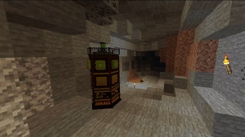

获取一架 TARDIS
第一部分：找到一架损坏的塔迪斯

在 1.14.4 版本中，塔迪斯可以在主世界的所有生物群系中，在 Y: 64 以下的地下找到。其刷出条件如下：
- 必须包含垂直堆叠的空气。（？）
- 这些块不是必须能够看到天空（必须有一块整体高于两个空气块）。
与塔迪斯互动
正如介绍中所概述的，每架塔迪斯都有独特的情感个性，在与之互动时可能会表现出不同的情感。
最初，损坏的塔迪斯是非常脆弱的，就像一个被逼入绝境或受伤的生物。外表产生火花，并发出脉动、微弱的辉光。在这个阶段，玩家或实体不能以任何形式进入塔迪斯。
玩家将需要说服塔迪斯为他们开放，以获得进入。大多数塔迪斯以热爱探索和冒险而闻名，所以玩家可能想要吸引这些情感。
赠送物品

玩家与塔迪斯互动的一种方式是给予它喜欢的道具，特别是与探索或冒险相关的道具。通过右键单击塔迪斯外部即可完成。如果塔迪斯喜欢这个物品，它会产生爱心粒子效果。一个成功的礼物也将增加塔迪斯对玩家的忠诚度。
塔迪斯可能喜欢的一些物品包括：
地图
末影珍珠
末影之眼
钟
时钟
指南针
强行入室

玩家也可以选择强行进入一个破碎的塔迪斯，右击与一匹马，然后右击与破碎的塔迪斯的外部。然而，这会给塔迪斯的情绪和忠诚带来负面影响。她可能会讨厌玩家，并试图不准确地降落，或把他们扔出去。